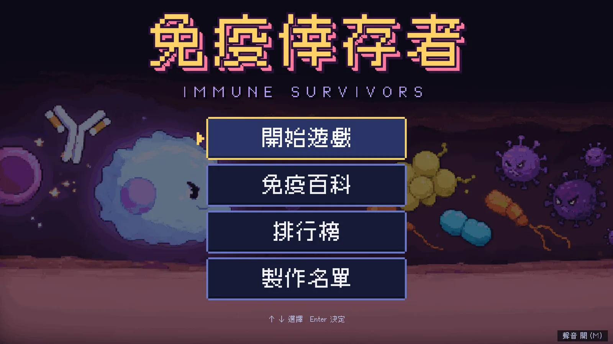
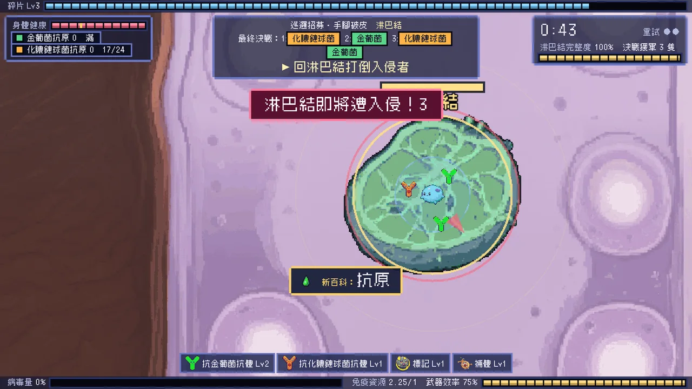
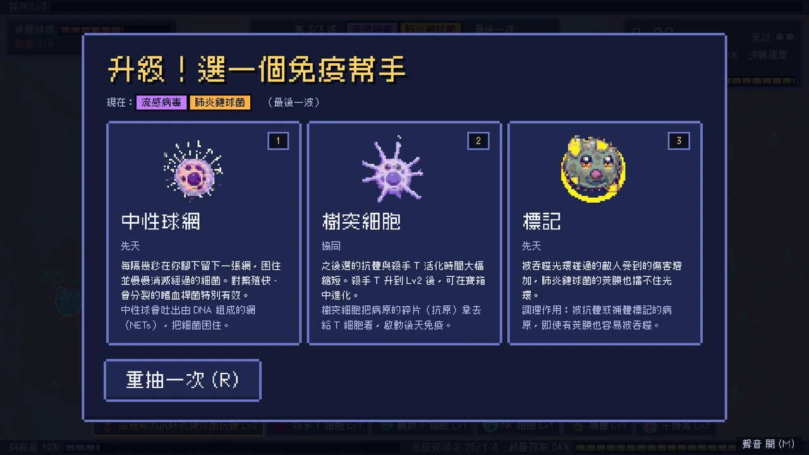
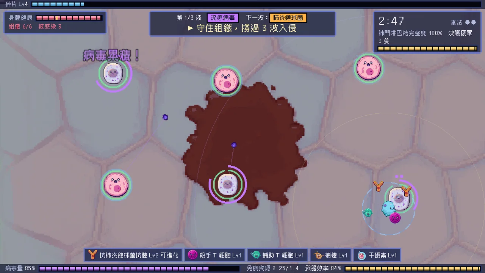
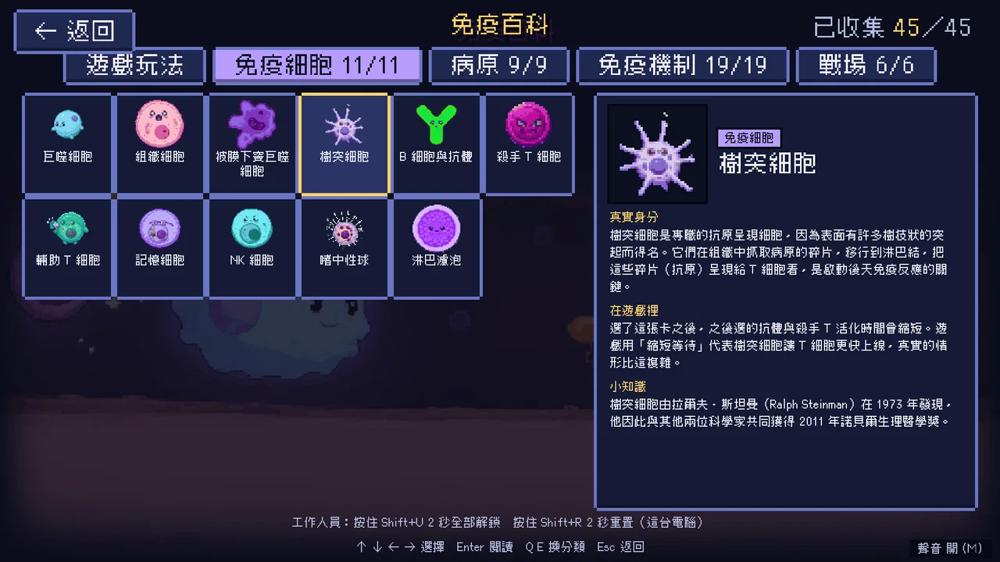

免疫倖存者 Immune Survivors
給國高中生玩的免疫科普小遊戲。你是一顆巨噬細胞：前兩分鐘在傷口附近巡邏，把打倒病原掉出的抗原碎片帶到淋巴結，招募 B 細胞和殺手 T 細胞；接下來三分鐘回到破口，帶著小隊守住六個組織細胞，撐過三波細菌和病毒。
升級卡都對應真實的免疫機制，像補體、發燒、樹突細胞、干擾素，玩家選卡時就得想先天免疫和後天免疫怎麼分工。三條感染路線（手腳破皮、小腸、肺）各有真實的病原組合，遊戲中遇到的細胞、病原和機制會收進「免疫百科」，共 45 條。
線上試玩 → 需要電腦鍵盤，手機無法操作

巡邏招募：把抗原送到淋巴結
升級選卡：每張卡是一個免疫機制
最終防線：肺路線的流感病毒波
免疫百科：樹突細胞
張立鑫獨立製作。Phaser 4、TypeScript；像素美術以 Qwen-Image 2.1 生成後再像素化；字型為俐方體 11 號。